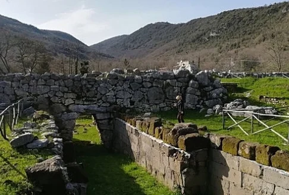
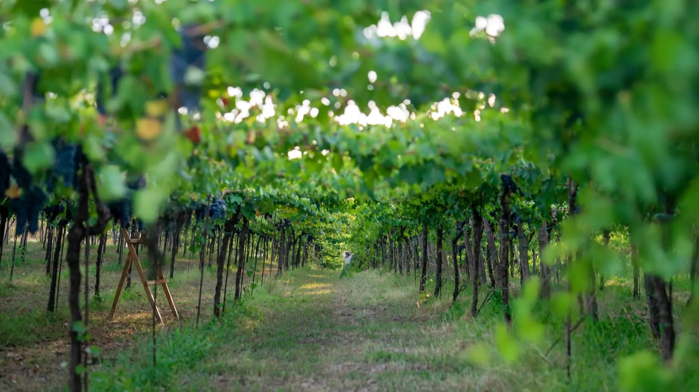
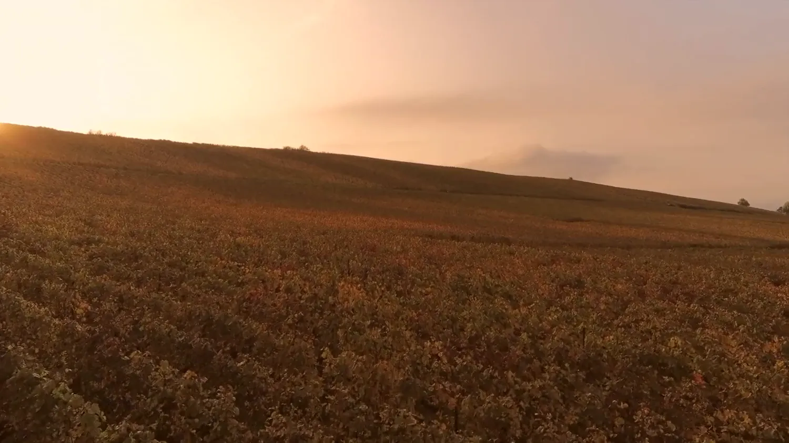

A · IstituzionaleL'Archivio
vivo.
Carta, inchiostro, documenti. Per stampa, istituzioni, bandi e Archivio di Stato.
- Carta del territorio che si incide dalle quote reali
- Linea del tempo orizzontale con il Ventaglio borbonico
- Carotaggi dei suoli e ruota degli aromi
- Adesione con sigillo di ceralacca
Apri la demo →

B · ScientificaIl suolo
parla.
Notte, strati, dati. La direzione più adatta a premi di design e stampa internazionale.
- Volo guidato dallo scorrimento sugli otto comuni
- Discesa nei tre suoli con profondità in centimetri
- Radar aromatico e gioco «Alla cieca»
- Citazione leggibile solo con la luce del cursore
Apri la demo →
 C · Comunità
C · ComunitàIl
filo.
Luce di settembre, persone, rete. La direzione che converte meglio in adesioni.
- Un filo verde che cuce tutta la pagina
- Costellazione della rete trascinabile, «aggiungi la tua realtà»
- Percorsi animati su carta reale, video verticali
- Tessera che si compila mentre scrivi
Apri la demo →

D · SintesiTerra
e persone.
La via di mezzo fra la B e la C: calore e adesioni, con un blocco scientifico al centro.
- Hero con carta reale e tre video in rotazione
- Blocco scuro «Il suolo parla» con radar degli aromi
- Carta che segue i comuni al passaggio del mouse
- Giostra 3D dei logotipi, tessera e quote
Apri la demo →